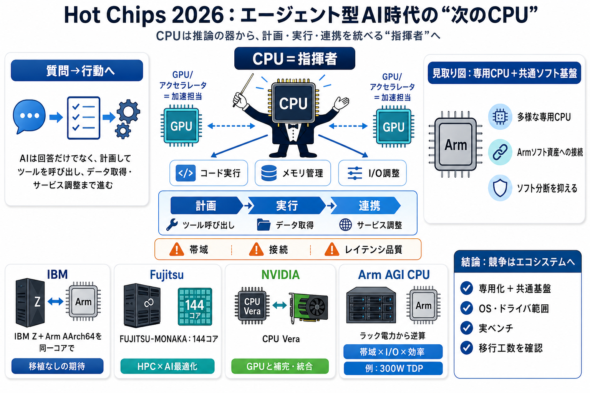

cover
02 / 14
Hot Chips 2026
次のCPUは
どこ
を見る
エージェント型AIが広がることで、CPUは「推論の器」から「計画〜実行〜連携」まで統べる側へ寄っていく。
problem
03 / 14
質問→行動へ
役割
が変わる
従来AIは「質問に答える」が中心で、モデル推論が主役だった。エージェント型AIは計画して実行し、ツール呼び出しやデータ取得まで多段で進む。
architecture
04 / 14
CPUの責任範囲
オーケストレーション
CPUはコード実行・メモリ管理・I/O調整を担い、GPU/アクセラレータへの仕事の割り当て（統合運用）が深く関与する。
工程
計画 → 実行
連携
ツール呼び出し → データ取得 → サービス調整
metaphor
05 / 14
指揮者 vs 弦楽器
CPUは
指揮者
GPUは加速担当になりやすい一方、エージェントの“仕事の連結”はCPUが詰まりやすい。帯域・接続・レイテンシ品質が全体を左右する。
GPU側
加速（推論等）
CPU側
同期/配分/制御（オーケストレーション）
evidence
06 / 14
同じ構図が増える
Armを
軸
に
Hot Chips 2026では、CPU関連発表の複数がArm中心の設計・開発として示され、「標準解」より「専用CPU＋共通ソフト基盤」が優位、という見取り図が提示された。
主張
多様な専用CPU
鍵
共通ソフト基盤
狙い
ソフト分断を抑える
comparison
07 / 14
会社別：Armの使い方
同じArmでも
用途
が違う
IBM
LinuxONE系へ拡張（メインフレーム＋AArch64）
Fujitsu
FUJITSU-MONAKA：144コア
NVIDIA
CPU Vera：エージェントAI基盤
Arm
AGI CPU：ラック電力×システム要件から設計
共通点
Armソフト資産への接続を重視
evidence
08 / 14
IBM：移植なしの期待
開発資産を
持ち運ぶ
IBMはメインフレーム/ LinuxONE系の将来プロセッサで、同一コア上にIBM ZとArm AArch64ソフトをネイティブ実行する方向性を示した。
焦点
「移植なしで到達可能」
根拠
Armソフト資産：22百万（開発者規模）
evidence
09 / 14
Fujitsu：HPC×エコシステム
分岐は
最適化
へ
Fujitsuは144コアのFUJITSU-MONAKAで、Armv9と広範なAI/HPCソフト環境を前提に、既存Armエコシステムへアクセスしつつ独自に性能・省電力を最適化する。
規模
144コア
前提
Armv9 + AI/HPCソフト基盤
evidence
10 / 14
NVIDIA：GPUと競合しない
Veraは
補完
設計
NVIDIAはエージェント型AIの仕事の流れに合わせたCPU VeraをArmベースで設計し、GPUと競合ではなく補完関係として統合する方向性を示した。
役割分担
CPU：統合/連結
（オーケストレーション）
統合方針
GPUの加速を活かしつつ相互補完
process
11 / 14
Arm AGI CPU：逆算設計
ベンチより
システム密度
Arm AGI CPUは通常のサーバCPU転用ではなく、並列性・継続的1コア性能・広いメモリ帯域・速いI/O・ラック電力制約での効率から逆算して設計したと説明されている。
電力/性能
例：300W TDP内で帯域×接続を重視
要件
DDR5チャンネル・PCIe・CXLなども織り込み
distinction
12 / 14
強い点と限界
魅力は
筋
が通る
この構図は説得的だが、「移植なし」「分断しない」の実証条件（対象アプリ範囲・依存関係・ドライバ/最適化・検証コスト）は別途確認が必要、と記事の読み手は注意している。
強み
技術必然（CPUの統合役割）＋事例の束ね方
限界
定量データ不足（実効スループット/電力/移行工数）
closing
13 / 14
読み替えの指針
競争は
エコシステム
CPU単体の性能競争ではなく、「ハード多様化を吸収する共通ソフト基盤」が鍵になり得る。導入判断は“無移植の期待”を、依存関係と検証条件で裏取りして進める。
結論
専用化＋共通基盤
観点
開発/運用資産の継続性
次の確認
OS・ドライバ範囲、実ベンチ、移行工数
REFERENCES
14 / 14
References
No references found